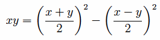
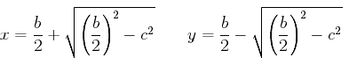

Let a straight line AB be cut into equal segments at C and into unequal segments at D.
I say that the rectangle AD by DB together with the square on CD equals the square on CB.
Describe the square CEFB on CB, and join BE. Draw DG through D parallel to either CE or BF, again draw KM through H parallel to either AB or EF, and again draw AK through A parallel to either CL or BM.
Then, since the complement CH equals the complement HF, add DM to each. Therefore the whole CM equals the whole DF.
But CM equals AL, since AC is also equal to CB. Therefore AL also equals DF. Add CH to each. Therefore the whole AH equals the gnomon NOP.
But AH is the rectangle AD by DB, for DH equals DB, therefore the gnomon NOP also equals the rectangle AD by DB.
Add LG, which equals the square on CD, to each. Therefore the sum of the gnomon NOP and LG equals the sum of the rectangle AD by DB and the square on CD.
But the gnomon NOP together with LG is the whole square CEFB, which is described on CB.
Therefore the rectangle AD by DB together with the square on CD equals the square on CB.
Therefore if a straight line is cut into equal and unequal segments, then the rectangle contained by the unequal segments of the whole together with the square on the straight line between the points of section equals the square on the half.
In the figure there is a part of a circle denoted with the points NOP. This is supposed to indicate the gnomon which is three parts of the square BCEF, the only part left out for the gnomon being the square EGHL. Later versions of the Elements did not have this curve in the figure. Instead, they named the same gnomon as LBG. Either way is sufficient to specify the gnomon.
We can represent a rectangle algebraically as xy where the sides are x and y. In the diagram above, take x as the line AD and y as the line DH, so that xy is the rectangle AH. According to this proposition, this product, or rectangle, is the difference of two squares, the large one being the square of (x + y)/2, which is the square on the line BC in the diagram, and the small one being the square of (x – y)/2, which is the square on the line LH (which equals the square on the line CD).
Using symbolic algebra, we can easily verify the identity

but Euclid was restricted to geometric arguments. The argument isn't difficult. The original rectangle AH is the sum of the rectangles AL and CH. By proposition I.43, the rectangles CH and HF are equal. And, of course, the rectangles AL and CM are equal. Therefore, AH = AL + CH = CM + HF = CB2 – LH2, as required.
This proposition is set up to help in the solution of a quadratic problem of the following form.
In terms of the single variable x, this is equivalent to solving the quadratic equation, x(b – x) = c2. This equation can be written in a standard form as
If b is represented as the line AB in the diagram, and with x = AD and y = BD, the first condition x + y = b is satisfied. This proposition says that the product xy equals the square on BC (which is b/2) minus the square on CD. Thus, the remaining condition reduces to finding CD so that (b/2)2 – CD2 = c2. By I.47, if a right triangle is constructed with one side equal to b/2 and another equal to c, then the hypotenuse will equal the required value for CD. Algebraically, the solutions AD for x and BD for y have the values

This analysis yields a construction to solve the quadratic problem stated above.
To cut a given straight line so that the rectangle contained by the unequal segments equals a given square. Thus the given square must not be greater than the square described on the half of the given straight line.
Let AB be the given straight line. Bisect it at C. Draw the semicircle AQB with center C and radius BC. Construct a perpendicular CR to AB at C equal to the side of the given square. Draw RS parallel to AB intersecting the semicircle at S, and draw SD perpendicular to AB.
Then, as described above, AB has been cut at G so that AG times GB equals the given square.
This proposition is not found in the Elements, but a generalization is. After II.14 the given square could be replaced by any given rectilinear figure, since II.14 constructs a square equal to a given rectilinear figure. But the full generalization is not given until proposition VI.28. Not only has the given square become a general rectilinear figure, but all the rectangles and squares have been replaced by parallelograms. That requires generalizing II.4 to parallelograms. that's done in VI.25 which constructs a parallelgram similar to a given parallelogram and equal to a given rectilinear figure. It also requires a few technical propositions to carry out the proof.
This proposition is used in II.14, III.35, and occasionally in Book X.
| Book II | II.14 |
|---|---|
| Book III | III.35 |
| Book X | X.17, X.41, X.60 |